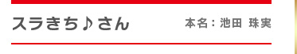
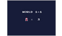
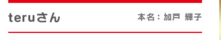
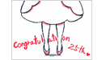
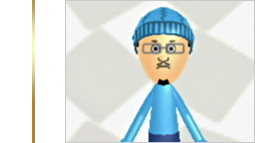
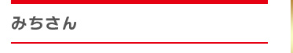
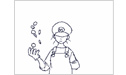

※ 掲載順は、作者名のアイウエオ順とさせていただきます。



1週間(構想期間を除く)
緊張してあまり、話ができませんでしたが、たいへん貴重な体験をさせていただき誠にありがとうございました。また、任天堂の宮本さん、手塚さん、小泉さんにお会いできた事が、とてもうれしかったです。
ひまつぶし程度で遊ぶぐらいで、発表作品はありません。


3週間くらい
夢のような時間でした。後になって他の参加者の方や、うごメモスタッフの方々とももっとお話したかったと思いました。聞かれた事に対してなかなか考えがまとまらなかったりして焦りました。もう非常に緊張しましたがとても楽しかったです。ありがとうございました。
今25作品アップしてますが最初の頃は娘の作品もあります。
何を作るか決めるまでに時間がかかったりするので、のんびりです。
動物を描いたもの、音楽に合わせたもの、動画の練習みたいなものです。
うごメモで一番作りたいのは音楽に合わせた作品です。



2週間くらい
(音楽に合わせて描いたのはこれが初めて。)
※ 写真は、ご本人の希望によりMiiでの掲載とさせていただきます。
自分以外にうごメモを描いている人たちを、初めて見たが、その作者と、作品を線で結びなさい、というテストが出ても、ほとんど正解は出ないだろう。
そういう、普通の人たちの、内に秘める「ちから」というものは外からは見えないものなのだなあ、と思った。そこが怖くもあり、うれしくもあった。
20万の星をいただいている作品もあります。自分で気に入ってるのは、雪の降るやつ。自分の空想から生まれた子どもらだけど、カワイイって自分で思っちゃうね。
これも一種の親バカなのか。ただのバカなのか。